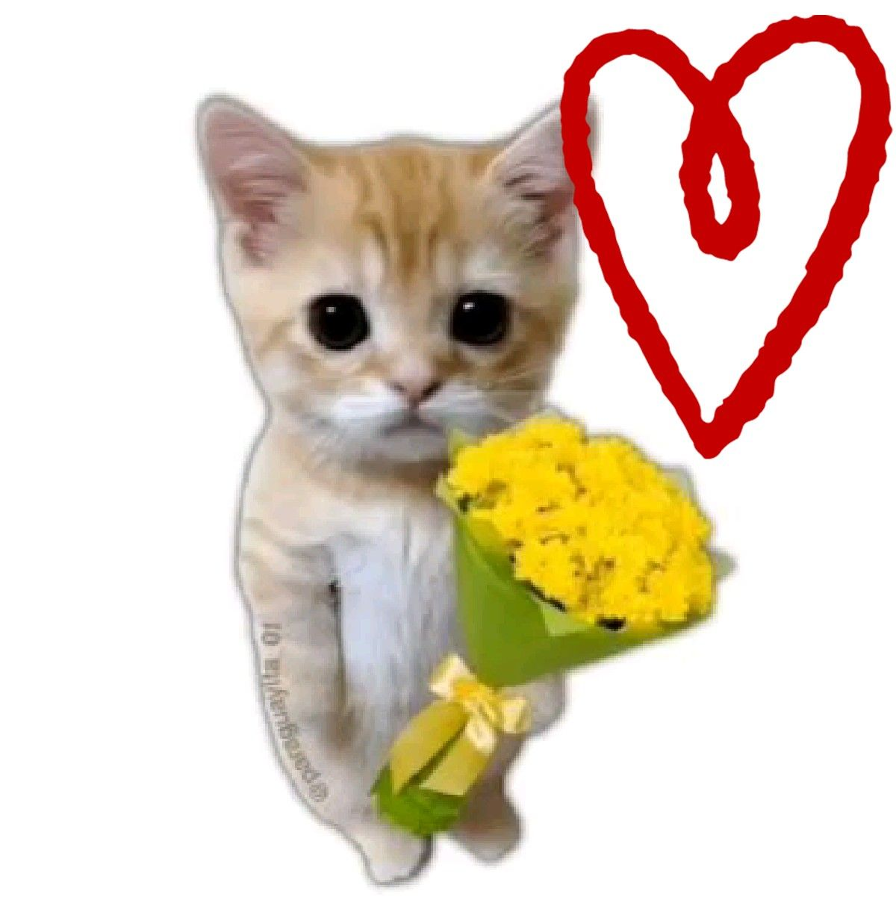

21 de septiembre
Antes de darte tus flores amarillas,
¿qué tal si jugamos?
Prometo que es cortito. Y prometo que las flores existen.
📺✨
Modo chimento activado
¿Qué tanto sabés de la farándula argentina?
10 preguntas. Moria, Fort, Pachano y toda la banda. Sin Google, eh.
🎭
(poné la foto en /img para verla acá)
🏆
Resultado final
0/10

¡Feliz primavera y día del estudiante!
Ten tus flores amarillas 💛